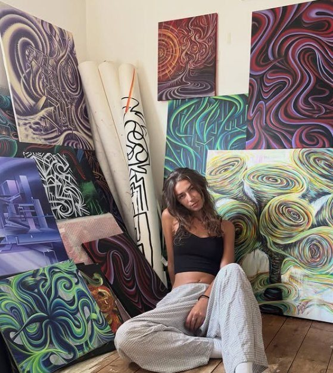
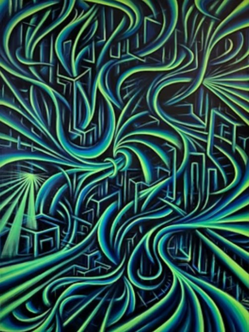
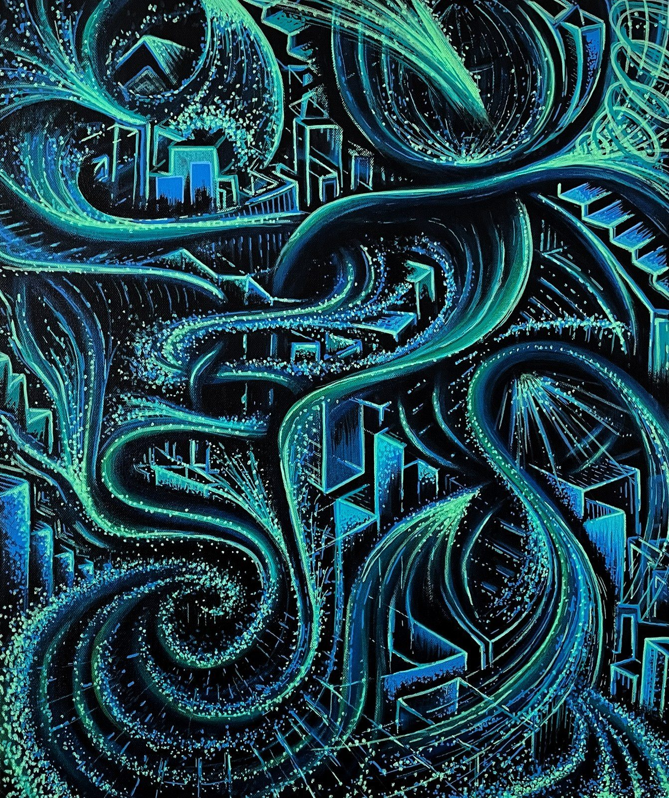
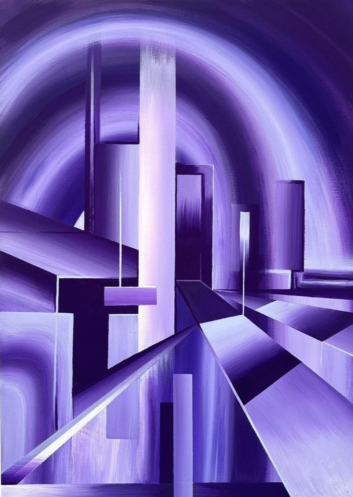
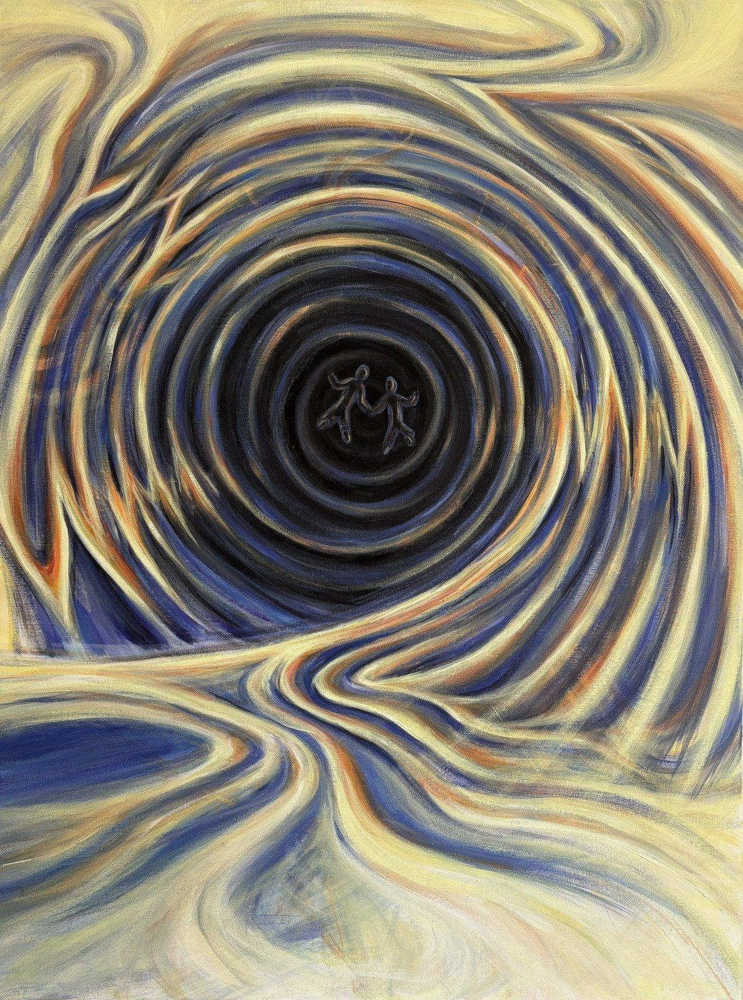

RSAS / Works / Artists We Follow / Holly Mingo
Holly Mingo
British abstract expressionist
Painting, murals and spatial design


Featured work
Entanglement
Holly Mingo
Holly began this painting with no plan at all, drawing freely to music until a framework appeared. She then built it up with fine gradients of light and dark, setting straight lines against flowing curves so that city-like buildings seem to hide among the waves.
Acrylic on canvas, 90 x 120 cm, unframed, signed and dated. A balanced chaos that comes alive in a spacious hallway, bedroom or living room with plenty of natural light.
£2,507
Enquire about this work
One of a kind
7 Worlds
Holly Mingo, 2022
This painting began life as a dull, textured canvas print abandoned on the street. Holly painted over it intuitively, with no plan and to music, turning it into a vibrant one-off and one of her earliest paintings: an important moment in her practice.
Its seven spirals stand for the many worlds of opportunity within each of us, each one a passage to another reality. Which will you choose?
Acrylic on canvas, 90 x 90 cm, unframed, signed and dated.
£2,328
Enquire about this workWorks






Holly Mingo is a British abstract expressionist artist and spatial designer. Her paintings translate emotion, thought and music into colour, with vivid calligraphic gestures and translucent layers that grew out of graffiti writing.
RSAS view. Colour as a language: Mingo's paintings move with the urgency of a gesture yet resolve into calm, decorative fields that suit a private collection or a hospitality space.
- Practice
- Abstract painting, large-scale murals and spatial design
- Education
- BA (Hons) Interior Design, University of the West of England
- Murals
- Boomtown Fair (2024 and 2025) and Wake The Tiger, Bristol (2024)
- Exhibitions
- View Art Gallery, Bristol (2023); The Mount Without, Bristol (2022); Boomer Gallery, London (2021)
- Based
- Bristol, UK
- Nationality
- British
- Career stage
- Emerging
- Market
- Primary
Biography
Practice
Mingo works intuitively, letting each painting unfold without a fixed plan, and often paints to music to reach a state of flow. She describes her canvases as projections of the mind: mindscapes shaped by emotion, memory and sensation, and informed by architecture, music and history.
Colour sits at the centre of the work. Her palette is bold yet nuanced, giving the surfaces rhythm and depth that hold up in refined interiors as well as on a festival wall.
Murals and projects
Since 2019 she has extended her practice into murals, festival environments, music studios, fashion collaborations and concept store design. Her mural work includes the Copperwood County district at Boomtown Fair and a freestyle mural at Wake The Tiger in Bristol, painted on live production sites with scenic teams. She has also created digital pattern artwork for clothing shown at New York Fashion Week.
Design background
A graduate in interior design from the University of the West of England, Mingo also works in art departments for television, film and music video, and her ambition is to bring painting and spatial design together as an immersive experience.